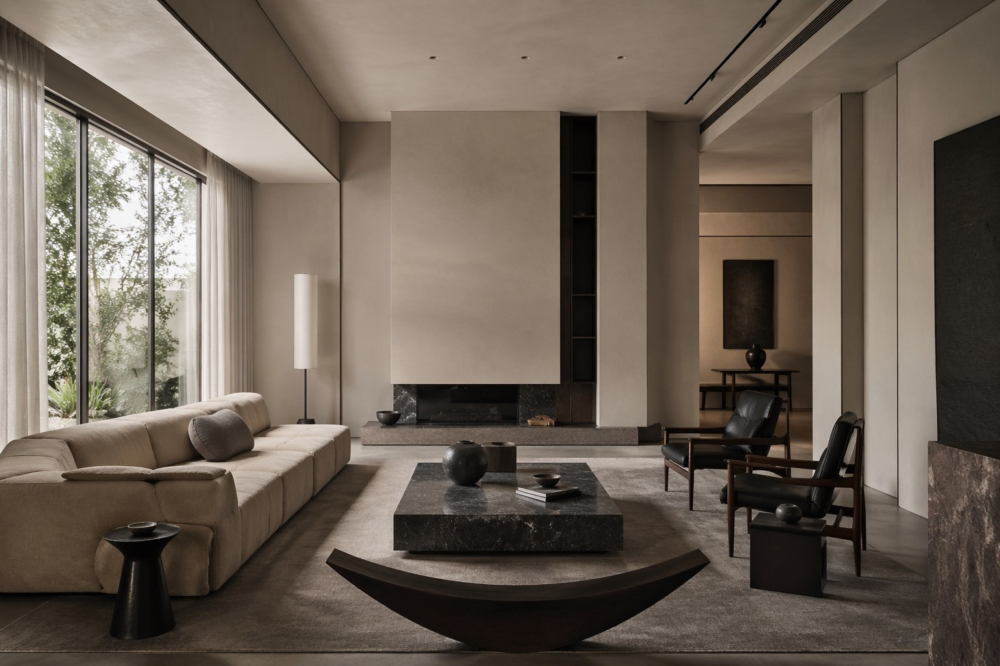
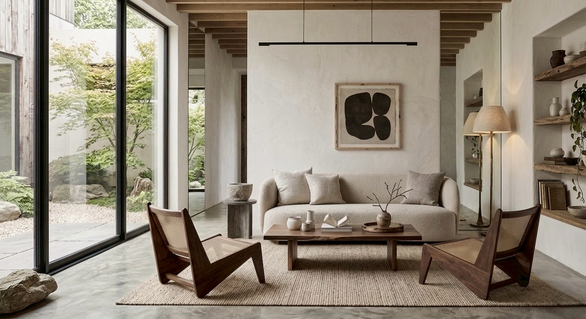

FUTURE ARCHITECTURE
我們致力於將「極簡主義」與「空間溫度」完美結合。
CHD Design 透過黑、白、灰的純粹語彙，捕捉光影的細微變化，
為每一位客戶量身打造回歸本質的高端居住體驗。


🏆 2024 德國 iF 設計大獎 Winner
🏆 2023 義大利 A' Design Award Gold
📍 台北市大安區某某路 100 號
📞 02-1234-5678
✉️ info@chddesign.com